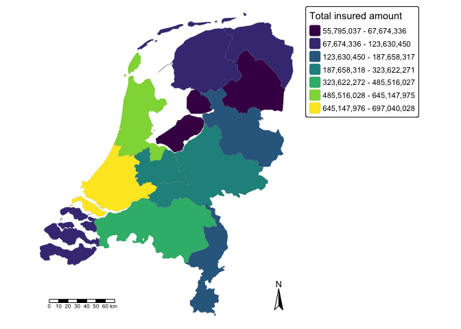

spatialrisk provides tools for fixed-radius spatial aggregation and concentration analysis in R. The package is aimed at applied workflows in which point-level values must be aggregated locally, for example to identify exposure concentration hotspots under a chosen radius.
The central question is practical: given a portfolio of point locations with associated values, which locations have the largest total value within a circle of fixed radius? Mathematically, this is a weighted fixed-radius circle-placement problem from computational geometry, applied here to spatial exposure data. Insurance concentration analysis is one natural application, but the same building blocks can be used for other weighted point data analysed within fixed-distance neighbourhoods.
Main operations
The package is intentionally focused on a small set of operations.
- fixed-radius calculations: identify points and compute sums within a radius;
- hotspot detection: find locations with maximum local concentration;
- polygon-based summaries and reporting: aggregate point exposures to reporting areas;
- supporting spatial data and utilities for reproducible workflows.
These operations are composable building blocks for applied concentration analyses rather than a prescribed business process or a general spatial modelling framework.
Quick start
install.packages("spatialrisk")
# Development version
remotes::install_github("MHaringa/spatialrisk")The package includes example address-level data for Groningen. The column amount represents an example value attached to each location. The parameter choices in the examples are illustrative; in practice, the relevant radius, value column, and reporting boundaries depend on the analytical question.
library(spatialrisk)
portfolio <- Groningen
head(portfolio[, c("lon", "lat", "amount")])
#> # A tibble: 6 × 3
#> lon lat amount
#> <dbl> <dbl> <dbl>
#> 1 6.57 53.2 24
#> 2 6.55 53.2 33
#> 3 6.57 53.2 48
#> 4 6.56 53.2 7
#> 5 6.57 53.2 16
#> 6 6.56 53.2 28Find the largest concentration
concentration_hotspot() searches for the centre of a fixed-radius circle with the largest aggregated value. In an insurance setting this can be used to identify local portfolio concentrations under a chosen analytical radius.
hotspot <- concentration_hotspot(
portfolio,
value = "amount",
radius = 200,
cell_size = 100,
progress = FALSE
)
hotspot
#> <hotspot>
#> Number of hotspots: 1
#> Radius: 200 meters
#> Value: amount
#>
#> id lon lat amount_sum
#> 1 1 6.547323 53.23663 64308The result contains the selected centre coordinates and the corresponding summed value, named from value; for example amount_sum. The contributing observations are stored in hotspot$contributing_points.
Inspect and evaluate local concentrations
The lower-level radius functions support inspection and custom workflows. The hotspot object already stores the observations that contribute to the selected concentration.
head(hotspot$contributing_points[, c("id", "data_row", "lon", "lat",
"amount", "amount_sum")])
#> id data_row lon lat amount amount_sum
#> 1 1 1492 6.545297 53.23569 148 64308
#> 2 1 4703 6.545482 53.23547 132 64308
#> 3 1 18287 6.545429 53.23546 130 64308
#> 4 1 19958 6.545392 53.23543 138 64308
#> 5 1 22587 6.545493 53.23545 142 64308
#> 6 1 19 6.544724 53.23646 411 64308
sum(hotspot$contributing_points$amount)
#> [1] 64308For a known or externally specified centre, points_within_radius() returns the observations that fall within the selected radius.
known_centre_points <- points_within_radius(
portfolio,
lon_center = 6.5549,
lat_center = 53.1942,
radius = 200
)
nrow(known_centre_points)
#> [1] 110
sum(known_centre_points$amount)
#> [1] 25668radius_sum() evaluates the same fixed-radius sum for one or more target locations. This is useful for evaluating known centres, externally specified locations, or candidate points created in a custom analysis.
targets <- portfolio[1:5, c("lon", "lat")]
radius_sum(
targets = targets,
reference = portfolio,
value = "amount",
radius = 200,
progress = FALSE,
result_col = "amount_200m"
)
#> # A tibble: 5 × 3
#> lon lat amount_200m
#> <dbl> <dbl> <dbl>
#> 1 6.57 53.2 8612
#> 2 6.55 53.2 16704
#> 3 6.57 53.2 9120
#> 4 6.56 53.2 7970
#> 5 6.57 53.2 8633The hotspot search can also be run as a decomposed workflow using lower-level preparation, candidate-selection, and optimisation functions. See the fixed-radius concentration vignette for details.
Continuous versus observed centres
The default continuous method can place the circle centre between buildings. For comparison, method = "observed" searches only observed point locations as possible centres and is therefore useful as a fast benchmark.
observed_hotspot <- concentration_hotspot(
portfolio,
value = "amount",
radius = 200,
method = "observed",
progress = FALSE
)
rbind(
continuous = hotspot$hotspots,
observed = observed_hotspot$hotspots
)
#> id lon lat amount_sum
#> continuous 1 6.547323 53.23663 64308
#> observed 1 6.547288 53.23664 64172This compact comparison illustrates that the maximum fixed-radius concentration does not necessarily need to be centred on an observed risk location.
Polygon-based reporting
Point-level concentration analysis is often followed by reporting at an administrative or portfolio-management level. For that purpose, summarise_points_by_polygon() joins points to polygons and summarises a numeric value.
province_summary <- summarise_points_by_polygon(
polygons = nl_provincie,
points = insurance,
value = "amount",
fun = sum,
outside = "ignore"
)
head(sf::st_drop_geometry(province_summary)[, c("areaname", "amount_sum")])
#> areaname amount_sum
#> 1 Drenthe 56766689
#> 2 Flevoland 55795037
#> 3 Friesland 78581984
#> 4 Gelderland 269468412
#> 5 Groningen 106580080
#> 6 Limburg 140680821For polygon maps, use choropleth() on the aggregated sf object. The visualisation vignette shows the full point-to-polygon reporting workflow.
choropleth(
province_summary,
value = "amount_sum",
id = "areaname",
legend_title = "Total insured amount"
)
Where to go next
- Fixed-radius concentration analysis:
vignette("fixed-radius-concentration", package = "spatialrisk") - Polygon aggregation and maps:
vignette("visualisation", package = "spatialrisk") - Function reference: https://mharinga.github.io/spatialrisk/reference/
Scope
spatialrisk does not estimate a statistical model and does not assign a probability distribution to the observed values. It provides deterministic spatial aggregation tools for fixed-radius concentration and polygon-based reporting workflows. Interpretation of the resulting concentration measures remains application-specific. The examples in this documentation illustrate generic spatial-analysis techniques and example-specific parameter choices. They are not intended to represent the methodology, processes, assumptions, thresholds, or practices of any particular organisation.
Core computations are implemented in C++ via Rcpp for efficient evaluation on larger point datasets.
Reference
The fixed-radius circle-placement problem is discussed by Chazelle and Lee (1986): Chazelle, B. M. and Lee, D. T. (1986). On a circle placement problem. Computing, 36(1–2), 1–16. doi:10.1007/BF02238188.
Related maximum covering location problems are described by Church (1974) doi:10.1007/BF01942293.
If you use this package in academic work, it can be cited as:
Haringa, M. (2026). spatialrisk: Spatial concentration and radius-based risk calculations in R.